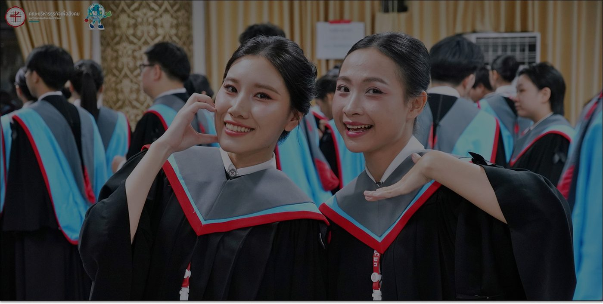
ต้นปีการศึกษา
Orientation & Welcome Week
ปฐมนิเทศและสัปดาห์ต้อนรับ
ปฐมนิเทศนิสิตใหม่ ครอบคลุมทุกหลักสูตร
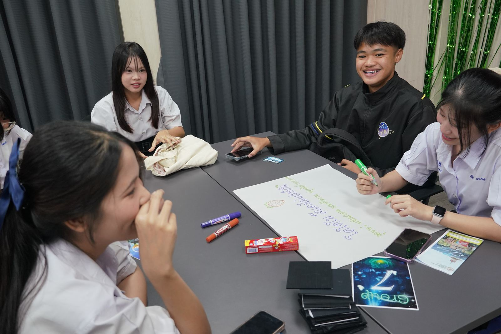
Beyond the Classroom
ชีวิตนิสิต
เรียนรู้ เชื่อมโยง และเติบโต — ประสบการณ์ของนิสิต BAS SWU นอกห้องบรรยาย
Student Services บริการนิสิต ทะเบียน ทุนการศึกษา คำปรึกษา และเอกสารStudent Activities
กิจกรรมนิสิต
ไฮไลต์จากองค์กรนิสิตและกิจกรรมระดับคณะตลอดทั้งปี

ปฐมนิเทศและสัปดาห์ต้อนรับ
ปฐมนิเทศนิสิตใหม่ ครอบคลุมทุกหลักสูตร
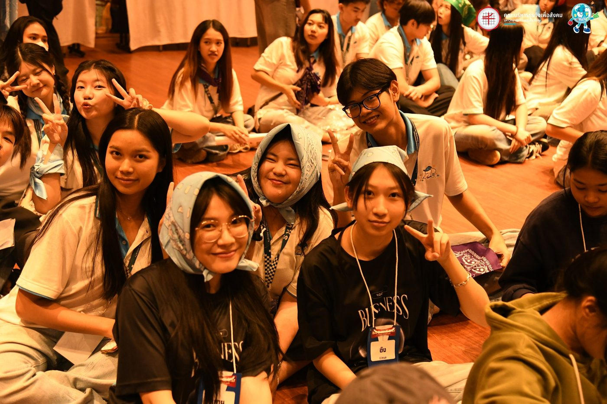
การแข่งขันเคสธุรกิจ
ทีมข้ามหลักสูตรแข่งขันแก้โจทย์ธุรกิจจริง และนำทฤษฎีไปใช้ในโปรเจกต์ประยุกต์
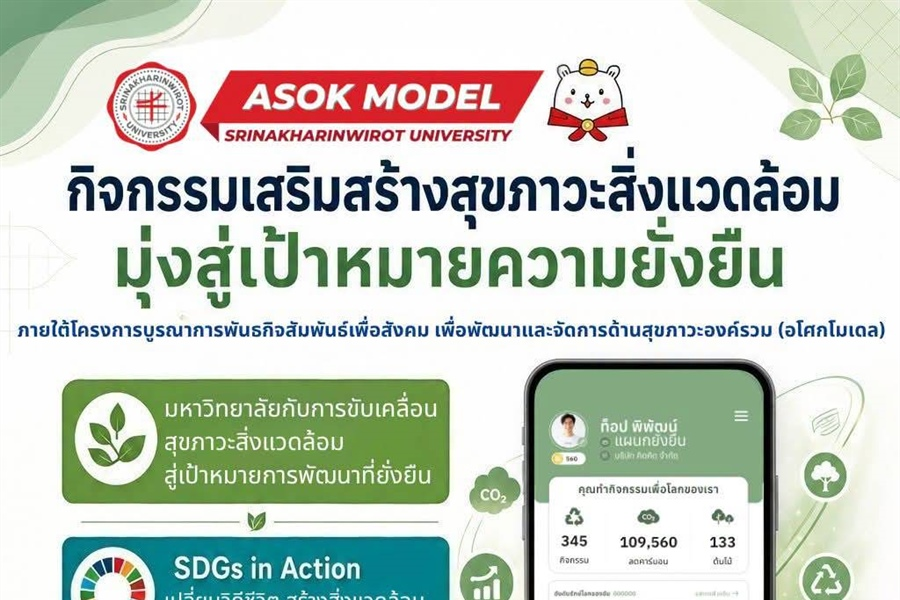
กิจกรรมเพื่อสังคมและความยั่งยืน
โครงการร่วมกับชุมชนและ Green Office เช่น Asok Model
Clubs & Societies
องค์กรและชมรมนิสิต
องค์กรที่บริหารโดยนิสิตเปิดพื้นที่ให้ทุกคนได้เป็นผู้นำ ตั้งแต่การจัดกิจกรรมไปจนถึงการสร้างเครือข่ายกับรุ่นพี่ศิษย์เก่า
Campus Facilities
สิ่งอำนวยความสะดวก
พื้นที่เรียนรู้ ทำงาน และพักผ่อนสำหรับนิสิตและบุคลากรภายในมหาวิทยาลัย
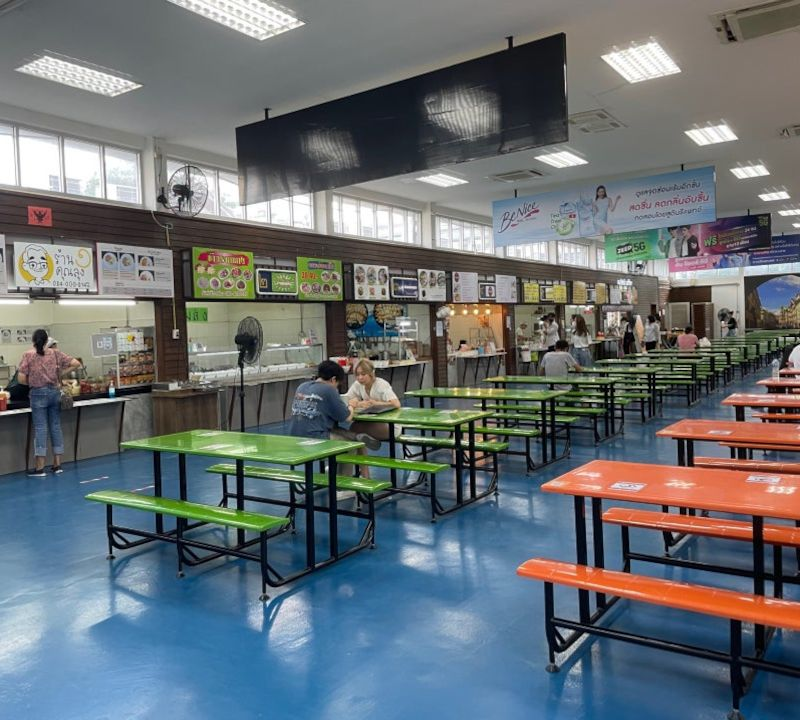
โรงอาหาร
อาหารไทยหลากหลายในราคาย่อมเยา ตั้งแต่ข้าวราดแกง ก๋วยเตี๋ยว ขนม ไปจนถึงเครื่องดื่ม เปิดให้บริการตั้งแต่เช้าถึงบ่ายในวันทำการ
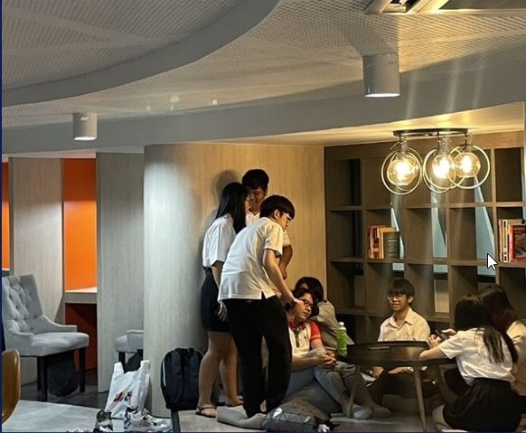
พื้นที่ Co-working
พื้นที่ทำงานร่วมกันสำหรับนิสิตและอาจารย์ ที่นั่งสบาย (Comfy seat) Wi-Fi ฟรี (Free Wifi) และพื้นที่กว้างขวาง (A lot of space) เหมาะทั้งทำงานเดี่ยวและทำงานกลุ่ม
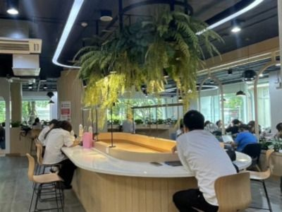
หอสมุดกลาง
บริการยืมหนังสือด้วยระบบยืมเองอัตโนมัติ มีโซน Board Game Zone สำหรับพักผ่อน โซนอ่านหนังสือเงียบและห้องกลุ่ม ปรับอากาศพร้อม Wi-Fi ฟรี
Accommodation & Maps
ที่พักและแผนที่
คอนโดมิเนียมใกล้มหาวิทยาลัยย่านอโศก–เพชรบุรี เดินทางด้วย MRT สถานีเพชรบุรี ราคาเริ่มต้นต่อเดือน (ข้อมูลจากเว็บไซต์ภาษาอังกฤษของคณะ — โปรดตรวจสอบราคาล่าสุดกับโครงการ)
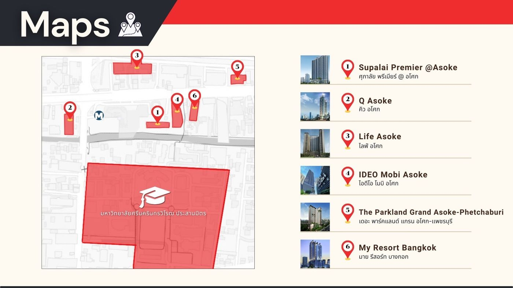
ศุภาลัย พรีเมียร์ @ อโศก
เริ่มต้น 25,000 บาท/เดือน
MRT เพชรบุรี 400 เมตร · สระว่ายน้ำ ฟิตเนส/ซาวน่า สวน รปภ. ล็อบบี้
คิว อโศก
เริ่มต้น 20,000 บาท/เดือน
MRT เพชรบุรี 100 เมตร · สระว่ายน้ำ ฟิตเนส/ซาวน่า สวน รปภ. ล็อบบี้ ห้องสมุด
ไลฟ์ อโศก
เริ่มต้น 18,000 บาท/เดือน
MRT เพชรบุรี 250 เมตร · สระว่ายน้ำ ฟิตเนส/ซาวน่า สวน รปภ. ล็อบบี้
ไอดีโอ โมบิ อโศก
เริ่มต้น 17,000 บาท/เดือน
MRT เพชรบุรี 300 เมตร · สระว่ายน้ำ ฟิตเนส/ซาวน่า สวน รปภ. ล็อบบี้
เดอะ พาร์คแลนด์ แกรนด์ อโศก-เพชรบุรี
เริ่มต้น 16,000 บาท/เดือน
MRT เพชรบุรี 500 เมตร · สระว่ายน้ำ ฟิตเนส/ซาวน่า สวน รปภ. ล็อบบี้ ห้องสมุด
มาย รีสอร์ท บางกอก
เริ่มต้น 16,000 บาท/เดือน
MRT เพชรบุรี 400 เมตร · สระว่ายน้ำ ฟิตเนส/ซาวน่า สวน รปภ. ล็อบบี้
Environment
สิ่งแวดล้อมรอบมหาวิทยาลัย
มหาวิทยาลัยศรีนครินทรวิโรฒ ประสานมิตร ตั้งอยู่ย่านอโศกที่คึกคัก ใกล้แหล่งช้อปปิ้ง ร้านอาหาร สวนสาธารณะ และตลาด ช่วยให้ทั้งเรียนและทำงานได้อย่างสมดุล
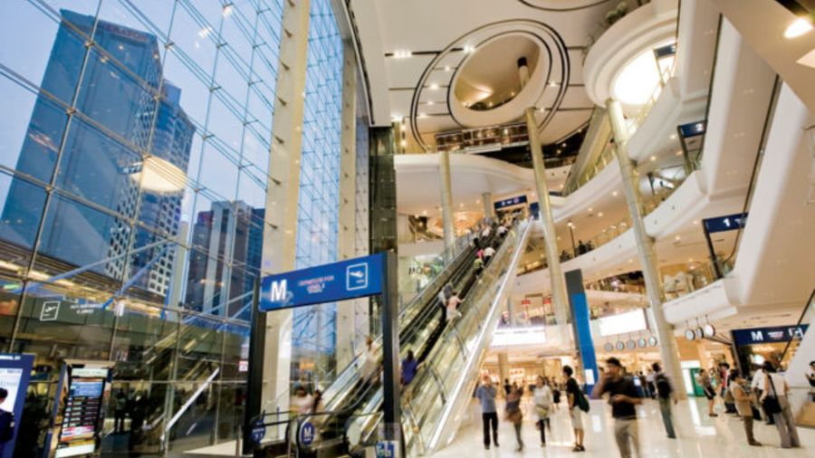
ห้างสรรพสินค้า
Terminal 21 Asoke ตกแต่งแต่ละชั้นตามบรรยากาศเมืองใหญ่ทั่วโลก · Central Rama 9 ศูนย์รวมไลฟ์สไตล์ย่านพระราม 9 · The EmQuartier คอมเพล็กซ์โรงภาพยนตร์ ซูเปอร์มาร์เก็ต และฟู้ดคอร์ท
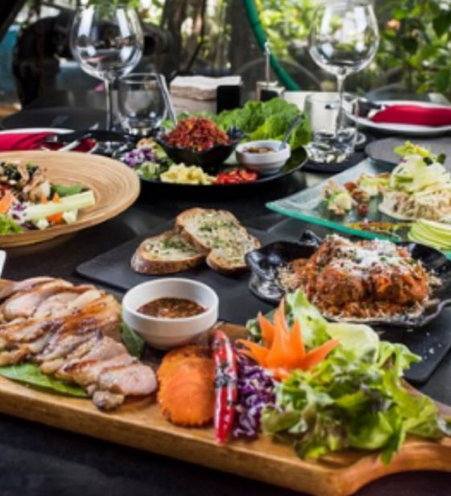
ร้านอาหาร
สมยงทำเสือ (SomYong TumSua) อาหารไทย ~250–400 บาท เปิด 09.00–22.30 น. · Rossano’s Italian Restaurant อาหารอิตาเลียน ~500–1,000 บาท เปิด 11.30–14.00 และ 17.00–23.00 น.
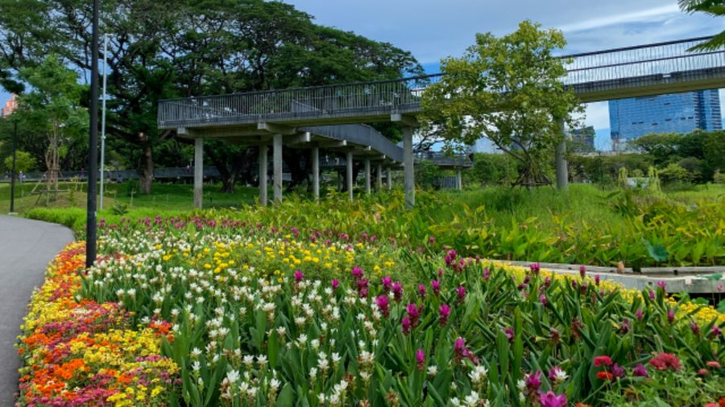
สวนสาธารณะ
สวนเบญจกิติ สวนสาธารณะใจกลางเมืองกว่า 450 ไร่ แนวคิด “ป่าอนุรักษ์น้ำ” มีกีฬา 7 ชนิด (พิกเคิลบอล ปิงปอง ฟุตซอล แบดมินตัน บาสเกตบอล ตะกร้อ สตรีทบาส) และกิจกรรมทางน้ำ 2 ชนิด (เรือถีบ พายคายัค)
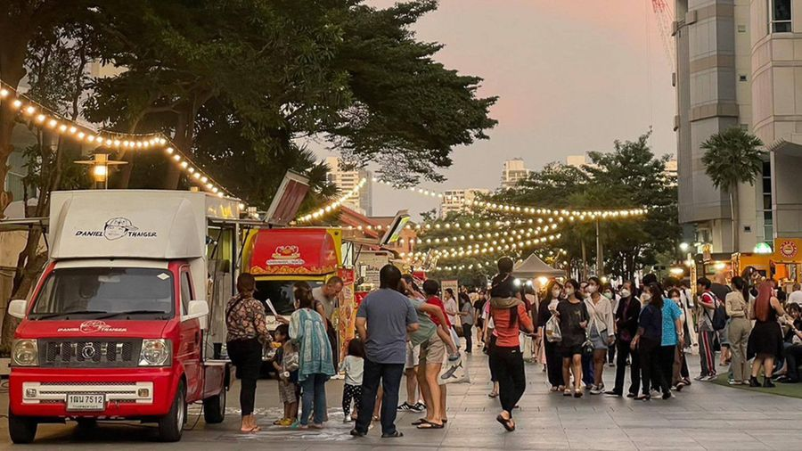
ตลาด
ตลาด มศว และตลาดกลางคืน มศว ร้านอาหารและสินค้าหลากหลาย มีเวทีให้นักเรียนสาธิตมศวแสดงดนตรี · Jodd Fairs พระราม 9 ตลาดกลางคืนที่รวมร้านอาหารและกิจกรรม
Alumni
ศิษย์เก่าที่โดดเด่น
เส้นทางอาชีพของศิษย์เก่าที่สร้างผลกระทบทางธุรกิจและสังคม — ชุดวิดีโอ Inspiring Alumni By SWUBAS จากทุกหลักสูตร
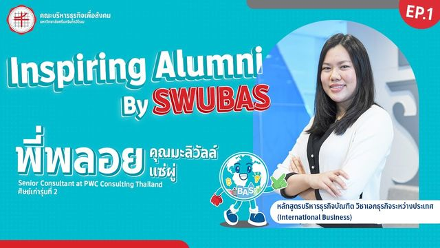
B.B.A. International Businessศิษย์เก่าธุรกิจระหว่างประเทศ (วิดีโอ YouTube เปิดในแท็บใหม่)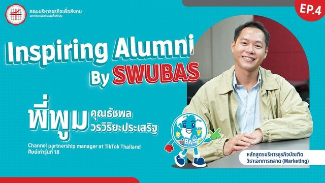
B.B.A. Marketingศิษย์เก่าการตลาด (วิดีโอ YouTube เปิดในแท็บใหม่)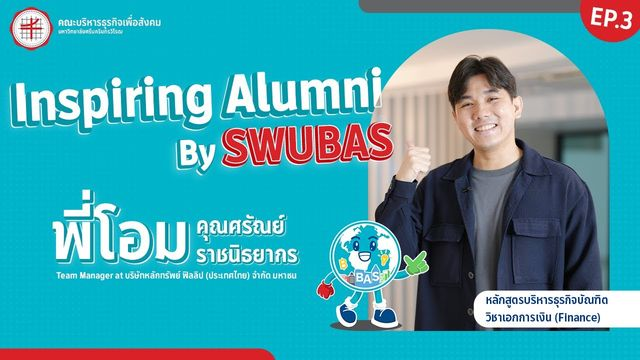
B.B.A. Financeศิษย์เก่าการเงิน (วิดีโอ YouTube เปิดในแท็บใหม่)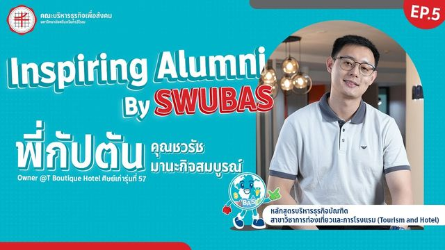
B.B.A. Tourism & Hotelศิษย์เก่าการท่องเที่ยวและการโรงแรม (1) (วิดีโอ YouTube เปิดในแท็บใหม่)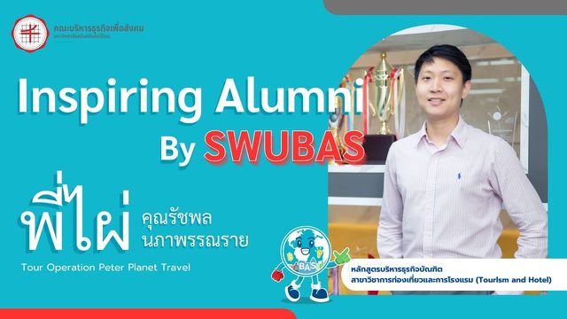
B.B.A. Tourism & Hotelศิษย์เก่าการท่องเที่ยวและการโรงแรม (2) (วิดีโอ YouTube เปิดในแท็บใหม่)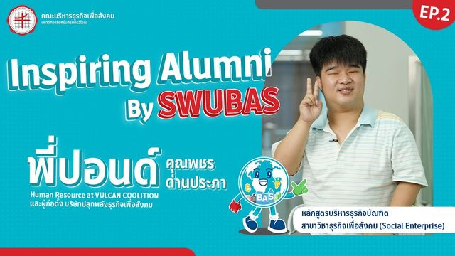
B.B.A. Social Enterpriseศิษย์เก่าธุรกิจเพื่อสังคม (วิดีโอ YouTube เปิดในแท็บใหม่)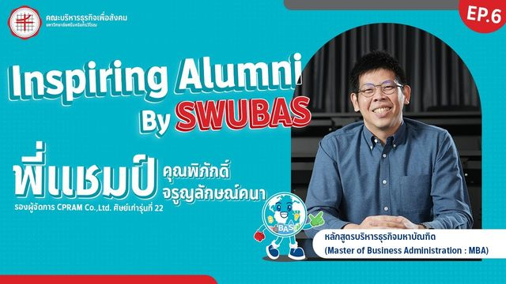
M.B.A.ศิษย์เก่าบริหารธุรกิจมหาบัณฑิต (วิดีโอ YouTube เปิดในแท็บใหม่)